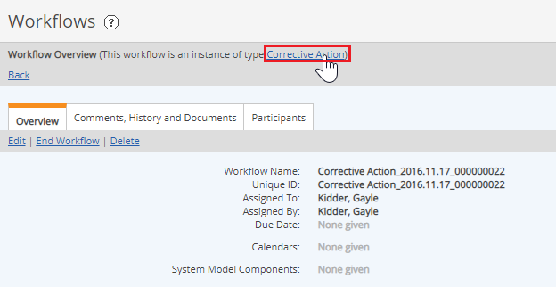
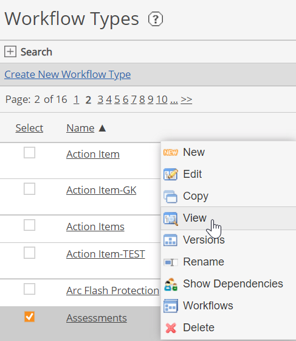

The Manage Workflows right is required to view or edit workflow types.
You can view the Workflow Type associated with a workflow instance from the Workflow Overview. Click the link to the workflow type on the top bar, "This workflow is an instance of type [Name]".

The workflow type associated with that workflow will be displayed. For explanation of the properties, see Workflow Type Editing Overview.
To view all Workflow Types in your system, from the menu, select Setup > Workflows > Types. All workflows configured for your system are shown.
Click a workflow name to view its properties, or right click and choose View or Edit to open the Workflow Type editor.

Use the Search pane to search Workflow Types. Search fields include Name, Created date, Description. You can also search for workflows that use a specific Role or Form, or have a specific Policy associated with them, or are used for configuration (principally used for EMs Apps).
The list may be sorted by Name or Created date by clicking on the column head.